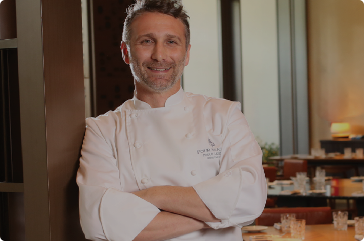

Nosso chef, Paolo Lavenzzi traz anos de experiência nas cozinhas mais refinadasda Itália, garantindo que cada prato seja uma verdadeira obra de arte.


Fundado para trazer a verdadeira essência da culinária italiana para os paladares mais exigentes, o Oro Rosso combina ingredientes selecionados , receitas tradicionais e um toque de exclusividade.
Nossa inspiração vem dos restaurantes clássicos de Roma e Florença, onde cada prato é uma experiência única.

Nosso chef, Paolo Lavenzzi traz anos de experiência nas cozinhas mais refinadasda Itália, garantindo que cada prato seja uma verdadeira obra de arte.

Rosana Lima ★★★★★
Uma experiência incrível! O melhor risoto trufado que já provei.
Roberto A. ★★★★★
Cada detalhe foi impecável, do atendimento à harmonização dos vinhos. Uma verdadeira viagem gastronômica à Itália!
Fernanda T. ★★★★
O ambiente elegante e aconchegante faz do Oro Rosso o lugar ideal para jantares especiais. Uma experiência inesquecível!
Giovanna M. ★★★★★
Jantar no Oro Rosso é uma experiência única. Desde a entrada até a sobremesa, tudo foi impecável! Cliente Fiel.
Mariana R. ★★★★★
O risoto de trufas foi o melhor que já provei! Sabores autênticos e ingredientes de altíssima qualidade.
Lucas e Ana ★★★★★
Escolhemos o Oro Rosso para comemorar nosso aniversário de casamento e foi mágico. O atendimento foi excepcional!